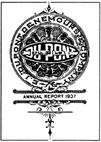

|  |
| |
A series of secret meetings were held.
In 1931, Mellon, in his role as Hoover’s Secretary of the Treasury, appointed his future nephew-in-law, Harry J. Anslinger, to be head of the newly reorganized Federal Bureau of Narcotics and Dangerous Drugs (FBNDD), a post he held for the next 31 years.
These industrial barons and financiers knew that machinery to cut, bale, decorticate (to separate the fiber from the high-cellulose hurd), and process hemp into paper or plastics was becoming available in the mid-1930s. Cannabis hemp would have to go.
In DuPont’s 1937 Annual Report to its stockholders, the company strongly urged continued investment in its new, but not readily accepted, petrochemical synthetic products. DuPont was anticipating “radical changes” from “the revenue raising power of government … converted into an instrument for forcing acceptance of sudden new ideas of industrial and social reorganization.”*
* (DuPont Company, annual report, 1937, our emphasis added.)

In The Marijuana Conviction (University of Virginia Press, 1974), Richard Bonnie and Charles Whitebread II detailed this process:
“By the fall of 1936, Herman Oliphant (general counsel to the Treasury Department) had decided to employ the taxing power [of the federal government], but in a statue modeled after the National Firearms Act and wholly unrelated to the 1914 Harrison [narcotics] Act. Oliphant himself was in charge of preparing the bill. Anslinger directed his army to turn its campaign toward Washington.
“The key departure of the marijuana tax scheme from that of the Harrison Act is the notion of the prohibitive tax. Under the Harrison Act, a non-medical user could not legitimately buy or possess narcotics.
“To the dissenters in the Supreme Court decisions upholding the act, this clearly demonstrated that Congress’ motive was to prohibit conduct rather than raise revenue. So in the National Firearms Act, designed to prohibit traffic in machine guns, Congress “permitted” anyone to buy a machine gun, but required him to pay a $200 transfer tax* and carry out the purchase on an order form.
* The $200 for the transfer tax is about $5,000 in 1998 dollars.
“The Firearms Act, passed in June 1934, was the first act to hide Congress’ motives behind a ‘prohibitive’ tax. The Supreme Court unanimously upheld the anti-machine gun law on March 29, 1937. Oliphant had undoubtedly been awaiting the Court’s decision, and the Treasury Department introduced its marihuana tax bill two weeks later, April 14, 1937.”
Thus, DuPont’s** decision to invest in new technologies based on “forcing acceptance of sudden new ideas of industrial and social reorganization” makes sense.
** It’s interesting to note that on April 29, 1937, two weeks after the Marihuana Tax Act was introduced DuPont’s foremost scientist, Wallace Hume Carothers, the inventor of NYLON for DuPont, the world’s number-one organic chemist, committed suicide by drinking cyanide. Carothers was dead at age 41.…
the authorized on-line version of Jack Herer’s “The Emperor Wears No Clothes”
| previous page | Chapter 4 | next page |
|
 |
 |
 |
 |